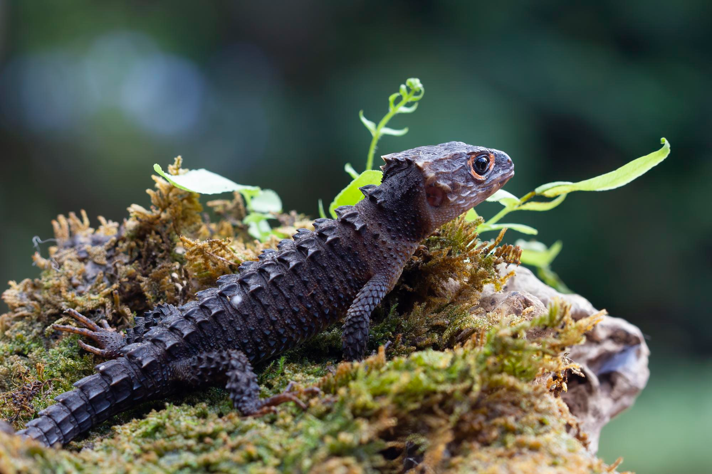

#}
{# #}
#}
{# #}
'خزندگان'
غذای خزندگان
خزنده ها چه می خورند؟
همانطور که انتظار میرود خزندگان چیز های جذابی نمیخورند ، از جمله موارد مورد علاقه خزندگان میتوان به حشرات، نرم تنان، پرندگان، قورباغه ها، پستانداران، ماهی ها یا حتی سایر خزندگان اشاره کرد .اگرچه لاک پشت های خشکی گیاهخوار هستند و در برخی موارد از برگ، علف و حتی کاکتوس استفاده میکنند .
خزندگان چه چیزی را نمی توانند بخورند؟
موش ها نگهداری کمی نیاز دارند ، مقرون به صرفه هستند و به ندرت بیمار می شوند. موش ها به طرز شگفت آوری تمیز هستند و می توان آنها را آموزش داد.
میانگین طول عمر خزندگان در اسارت چقدر است ؟
توپ پیتون 15 تا 20 سال دستگاه بوآ 15 تا 25 سال اژدهای ریشدار 5 تا 10 سال مار ذرت 10 تا 15 سال لاک پشت جعبه ای شرقی 25 تا 50 سال آنول سبز 4 تا 8 سال ایگوانای سبز 5 تا 15 سال شاه مار 10 تا 15 سال مارمولک پلنگی 20+ سال لاک پشت پلنگی 50+ سال آفتاب پرست های دنیای قدیم 3 تا 8 سال
خزندگان چه چیزی را نمی توانند بخورند؟
با این حال از کلم پیچ، اسفناج، کلم بروکلی، کلم و کاهوی رومی اجتناب کنید، زیرا این سبزی ها حاوی ماده ای هستند که از جذب مناسب کلسیم توسط خزندگان جلوگیری می کند.
آیا همه خزندگان گوشت می خورند؟
بیشتر دوزیستان و خزندگان گوشتخوار هستندو به این معنی است که آنها حیوانات یا حشرات دیگر را می خورند.البته تعداد کمی گیاهخوار هستند، یعنی فقط مواد گیاهی را می خورند و برخی همه چیزخوار هستند، یعنی هر دو را خواهند خورد.

Meet podcaters

Taylor

Modeling
Fashion

William
Creative
Design

Chan
Education